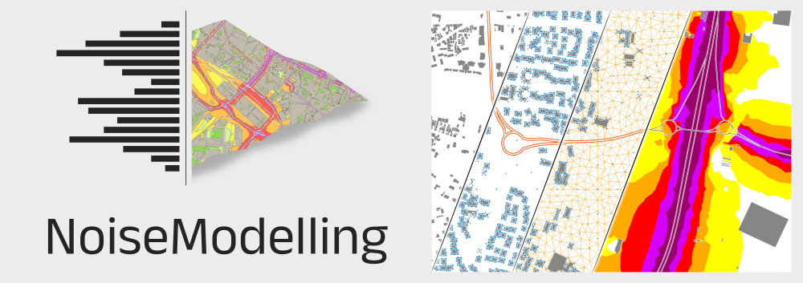

NoiseModelling User Guide

Welcome on the official NoiseModelling User Guide.
NoiseModelling is a free and open-source Java library for producing environmental noise maps from local to national scales, implementing CNOSSOS‑EU road and rail noise emission and propagation methods while linking to H2GIS and PostGIS for spatial analysis. It responds to the need for robust noise assessment in public health and environmental planning by enabling simulation and prediction of noise propagation for mitigation design and compliance with EU regulations. The software can be used independently or through a graphical interface and is openly available to the research, education, and professional communities. It has been widely used for strategic noise mapping, dynamic maps driven by traffic models or sensors, sensitivity studies, and investigations of particular sources such as emergency sirens and drones.
A general overview of the model (v3.4.5 - September 2020) can be found in this video.
for more information on NoiseModelling, visit the offical NoiseModelling website
to contribute to NoiseModelling source code, follow the “Get Started” page
for more information for the final results with the reference results in ISO/TR 17534-4: 2020 follow the “Conformity to ISO 17534-1:2015” page
- to contact the support / development team,
open an issue or a write a message (we prefer these two options)
send us an email at contact@noise-planet.org
Packaging
The latest release page offers three NoiseModelling packages:
NoiseModelling_X.X.X.zip: A cross-platform version for Windows, Linux, and macOS. It includes the web GUI and a command-line interface.NoiseModelling_X.X.X_install.exe: A standalone Windows installer that includes the web GUI and a bundled Java Virtual Machine.NoiseModelling-X.X.X.dmg: A standalone Mac OS installer that includes the web GUI and a bundled Java Virtual Machine.
Please check the Installation guide before installing, and refer to NoiseModelling client line interface (CLI) for CLI usage.
Warning
The Windows and Mac OS installer have not been signed yet. So you may have a security warning when installing and you are invited to follow additional steps to bypass this issue.
In addition, a Docker image is provided in the packages page.
Licence
NoiseModelling and its documentation are distributed for free under GPL v3 License.
Publications
NoiseModelling was initially developed in a research context, which has led to numerous scientific publications. For more information, have a look to “Scientific production” page. To quote this tool, please use the bibliographic reference below:
Note
Erwan Bocher, Gwenaël Guillaume, Judicaël Picaut, Gwendall Petit, Nicolas Fortin. NoiseModelling: An Open Source GIS Based Tool to Produce Environmental Noise Maps. ISPRS International Journal of Geo-Information, MDPI, 2019, 8 (3), pp.130. (10.3390/ijgi8030130)
Fundings
Research projects:
OPTImisation technique et environnementale des moyens de lutte contre le gel en viticulture par Tours-Anti-Gel en Centre-Val de Loire (OptiTAG), funded by Région Centre Val de Loire & co-funded by European Union 2024-2027
AMELIA, funded by the call “DIAT (Démonstrateurs d’IA frugale au service de la transition écologique) de la Banque des Territoires” 2024-2027
ANR SYMEXPO (ANR-21-CE22-0022-01) 2021-2026
Sampols 2.0: a disruptive solution for noise pollution monitoring (SIREN), funded by Eurostars 3 - BPI 2024-2025
Nature4cities (N4C) project, funded by European Union’s Horizon 2020 research and innovation programme under grant agreement N°730468
ANR CENSE (ANR-16-CE22-0012) 2017-2021
ANR VegDUD (ANR-09-VILL-0007) 2009-2014
ANR Eval-PDU (ANR-08-VILL-0005) 2008-2011
Institutional (public) fundings:
DGPR 2020-2022 & 2025-27
Université Gustave Eiffel (formerly Ifsttar, formerly LCPC), CNRS, Cerema, Université Bretagne Sud, Ecole Centrale de Nantes
Private fundings:
Airbus Urban Mobility
Warning
The official documentation is available in English only
Some illustrations may refer to previous versions of NoiseModelling
If you observe some mistakes or errors, please open an issue here or contact us at contact@noise-planet.org
You are also welcome to contribute to the documentation (click on “Edit on Github” - top of the page)
NoiseModelling presentation
Input tables & parameters
Tutorials
Functions
User Interface
For Advanced Users
For Developers